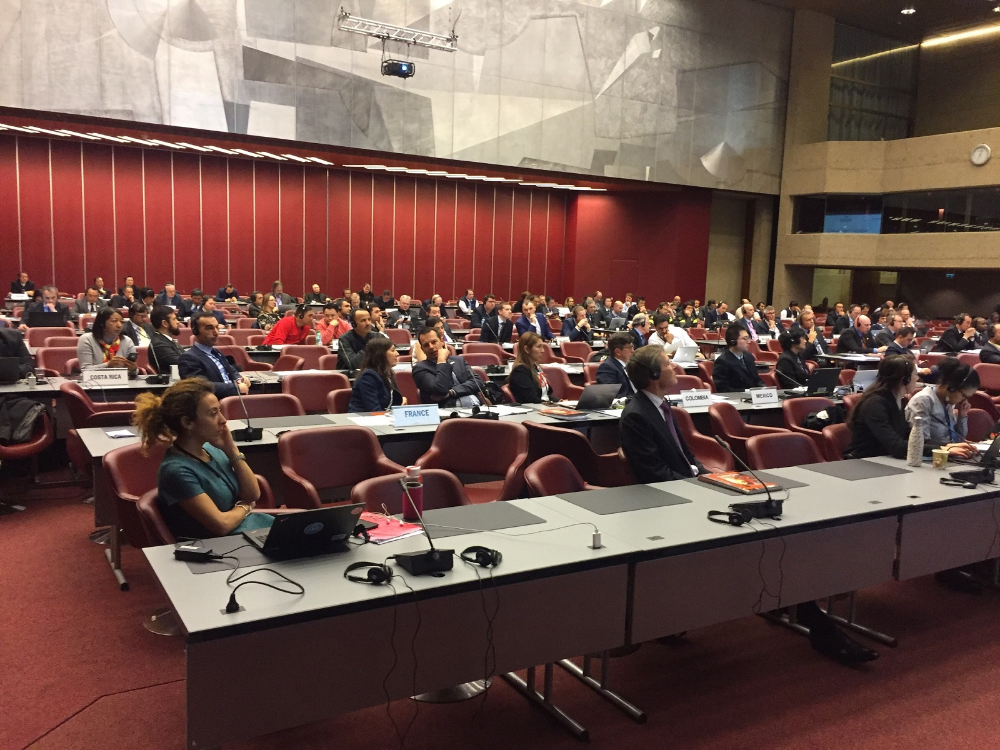

INSARAG está dirigido por un Grupo directivo, compuesto por el Presidente de INSARAG a nivel mundial, los Presidentes y Vicepresidentes de los Grupos Regionales de INSARAG, los puntos focales nacionales INSARAG de países con equipos clasificados por el proceso IEC, los presidentes de los grupos de trabajo de INSARAG y la Secretaría de INSARAG. El Grupo Directivo se reúne anualmente para determinar la dirección estratégica y políticas de INSARAG.
Los informes de estas reuniones anuales se publican aquí.

2018:
2018 Chairman Summary (English)2018 Chairman Summary (Spanish)Annex A1 (Closed Meeting) ISG 2018 AgendaAnnex A2 (Open meeting) ISG 2018 Annex B1 INSARAG List of participants Closed SessionAnnex B2 ISGM Meeting List of participants Open SessionAnnex C INSARAG Report 2017Annex D Final ISG 2018 Decision Matrix2017:
2017 Chairman Summary (English)2017 Chairman Summary (Spanish)Annex A ISG 2017 AgendaAnnex B1 INSARAG List of participants Open SessionAnnex B2 ISGM Meeting List of participants Closed SessionAnnex C Strategy 2017-2020Annex D IER Guidance NoteAnnex E Beyond the Rubble2016:
2016 INSARAG Steering Group Meeting Chairman Summary with Annex A (English)
2016 INSARAG Steering Group Meeting Chairman Summary with Annex A (Spanish)
Annex B - Participant list
Annex C1 - Concept Note - Capacity Building
Annex C2 - Concept Note - IER System
Annex C3 - Concept Note - International Light Teams
Annex C4 - Concept Note - Beyond the Rubble
Annex C5 - Concept Note - National USAR Team Accreditation (English)
Annex C5 - Concept Note - National USAR Team Accreditation (Spanish)
2015:
2015 Resumen de la reunión del Grupo Directivo de INSARAG (inglés)1. Nota Verbal del Director OCHA Ginebra2. Resumen de la reunión3. Anexo A - Lista de participantes4. Anexo B - Agenda5. En el Anexo C - Proyecto de Declaración de Abu Dhabi2014:
2014 Resumen de la reunión del Grupo Directivo INSARAG con los anexos (inglés)
2014 Resumen de la reunión del Grupo Directivo INSARAG (español)
2013:
2013 Resumen de la reunión del Grupo Directivo INSARAG (inglés, español)
2013 Anexos Resumen de la reunión del Grupo Directivo INSARAG (inglés)
2012:
2012 Resumen de la reunión del Grupo Directivo INSARAG (inglés)
2011:
2011 Resumen de la reunión del Grupo Directivo (árabe, inglés, francés)
2011 Anexos Resumen de la reunión del Grupo Directivo INSARAG (inglés)
2010:
2010 Resumen de la reunión del Grupo Directivo INSARAG con los anexos (inglés)
2009:
2009 Resumen de la reunión del Comité directivo de INSARAG con los anexos (Inglés)
2008:
2008 Resumen de la reunión del Comité directivo de INSARAG con los anexos (Inglés)
2007:
2007 Lista de participantes de la reunión del Comité directivo INSARAG (inglés)
2007 Resumen de la reunión del Comité directivo de INSARAG (inglés)
2007 Agenda de la reunión del Comité directivo de INSARAG (inglés)
2006:
2006 Resumen de la reunión del Comité directivo de INSARAG con el anexo (inglés)
2005:
2005 Resumen de la reunión del Comité directivo de INSARAG (árabe, inglés, francés)
2005 Agenda de la reunión del Comité directivo de INSARAG (inglés)
2004:
2004 Resumen de la reunión del Comité directivo de INSARAG (árabe, inglés, francés)
2004 Lista de participantes de la reunión del Comité directivo de INSARAG (inglés)
2003:
2003 Lista de participantes de la reunión del Comité directivo de INSARAG (inglés)
2003 Resumen de la reunión del Comité directivo de INSARAG (inglés)
2003 Anexos del resumen de la reunión del Comité directivo de INSARAG (inglés)
2002:
2002 Informe de la reunión del Comité directivo de INSARAG (inglés)
1999:
1999 Informe de la reunión del Comité directivo de INSARAG (inglés)
1998:
1998 Informe de la reunión Comité directivo INSARAG (inglés)
1997:
1997 Informe de la reunión Comité directivo INSARAG (inglés)
1994:
1994 Informe de la reunión Comité directivo INSARAG (inglés)
1991:
1991 Documentación de la reunión inaugural de INSARAG (inglés)